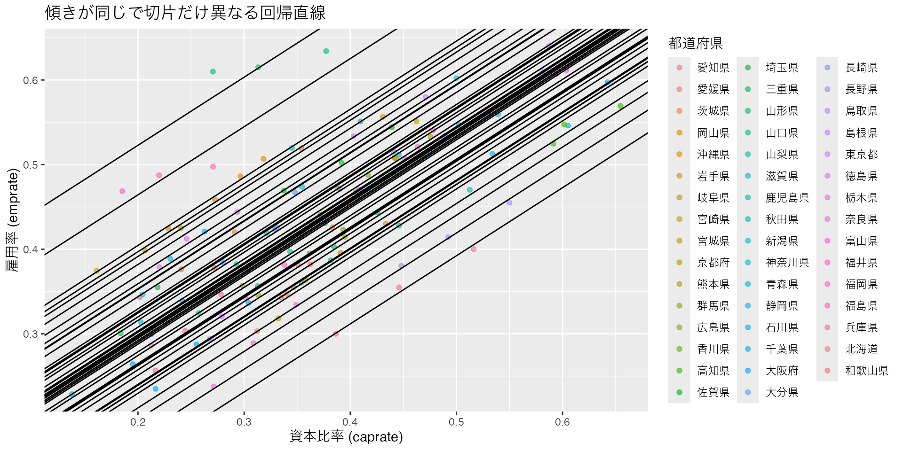
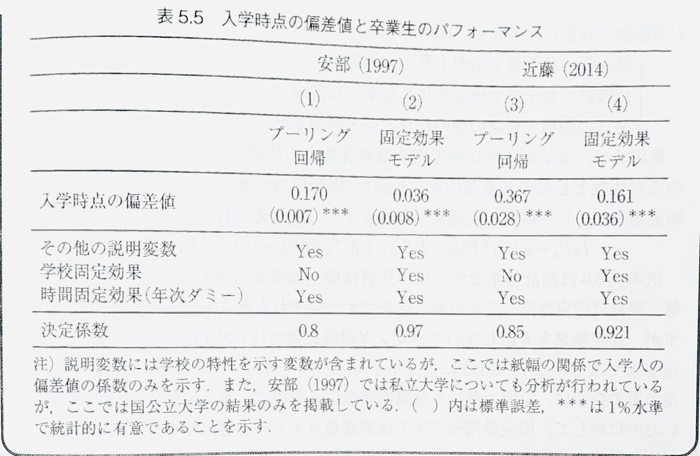

プレゼミ2024
第5章 差の差の分析 第2回
Soichi Matsuura
おさらい
差の差推定
- 国際経営学科では大学2年生の夏休みに短期留学の参加が義務づけられ、経営学科は義務ではなかった、という状況を考える。
- 短期留学の必修化の効果を考える。
- 国際経営学科1回生終了時のTOEICスコアを\(Y_{T,i0}\)とし、2回生終了時のTOEICスコアを\(Y_{T,i1}\)とする。
- スコアの変化は\(Y_{T,i1} - Y_{T,i0}\)で表す。
- この変化の期待値\(\mathrm{E}[Y_{T,i1} - Y_{T,i0}]\)は、留学の効果だけを示すわけではなく、2年生の間の学習効果も含むことに注意。
比較群の設定
- 短期留学が義務ではない経営学科の学生を比較群とする。
- 経営学科1回生終了時のTOEICスコアを\(Y_{C,i0}\)、2回生終了時のTOEICスコアを\(Y_{C,i1}\)とする。
- 経営学科の学生のスコアの変化は\(Y_{C,i1} - Y_{C,i0}\)で表し、期待値は\(\mathrm{E}[Y_{C,i1} - Y_{C,i0}]\)とする。
- 短期留学の効果を抽出するために、2つの期待値の差をとる。
\[ \mathrm{E}[Y_{T,i1} - Y_{T,i0}] - \mathrm{E}[Y_{C,i1} - Y_{C,i0}] \]
差の差の推定の意味
| 介入前 | 介入後 | 差 | 差の差 | |
|---|---|---|---|---|
| 処置群 | \(\bar{Y}_{T,0}\) | \(\bar{Y}_{T,1}\) | \(\bar{Y}_{T,1} - \bar{Y}_{T,0}\) | \((\bar{Y}_{T,1} - \bar{Y}_{T,0}) - (\bar{Y}_{C,1} - \bar{Y}_{C,0})\) |
| 比較群 | \(\bar{Y}_{C,0}\) | \(\bar{Y}_{C,1}\) | \(\bar{Y}_{C,1} - \bar{Y}_{C,0}\) |
ここで\(\bar{Y}\)は[Y]$を表す。
線形回帰による差の差推定
線形回帰モデルを使って差の差推定を行う。
\[ Y_{it} = \beta_0 + \beta_1 D_i + \beta_2 T_t + \beta_3 (D_i \times T_t) + \varepsilon_{it} \]
- \(Y_i\) : 学生\(i\)のTOEICスコア
- \(D_i\) : 学生\(i\)が国際経営学科の場合は1、経営学科の場合は0
- \(T_t\) : 2年生の場合は1、1年生の場合は0
回帰係数の解釈
| 介入前 | 介入後 | 差 | 差の差 | |
|---|---|---|---|---|
| 処置群\(D_i = 1\) | \(\beta_0 + \beta_1\) | \(\beta_0 + \beta_1 + \beta_2 + \beta_3\) | \(\beta_2 + \beta_3\) | \(\beta_3\) |
| 比較群\(D_i = 0\) | \(\beta_0\) | \(\beta_0 + \beta_2\) | \(\beta_2\) |
パネルデータのDiD
パネルデータとは？
- 複数の個体\(i\)を、複数の時点\(t\)で観測したデータをパネル・データという。
- パネルデータの利点は、
- 個体\(i\)がもつ特徴をコントロールできる。
- 時間による変化を評価できる
- サンプル・サイズが大きくできる
パネルデータのメリット
- Asai et al. (2015)を題材にパネルデータのメリットを考える。
- 保育施設の拡充は女性の就業率を高めたのか？を
- 都道府県\(i\)の保育所定員率\(X_i\)が、母親就業率\(Y_i\)に与える影響
\[ Y_i = \alpha + \beta X_i + \varepsilon \]
散布図
パネルデータと因果効果
- しかしこの散布図からは、因果効果を推定することはできない。
- そこでパネルデータの特徴を活かして、因果効果を推定する方法を考える。
- 都道府県ごとの就業率
emprateと保育所定員率caprateを追跡し、都道府県ごとに傾きは同じだが切片が異なる回帰直線を推定する。
Call:
lm(formula = emprate ~ caprate + factor(pref), data = df)
Residuals:
Min 1Q Median 3Q Max
-0.031342 -0.007280 0.001083 0.007131 0.030703
Coefficients:
Estimate Std. Error t value Pr(>|t|)
(Intercept) 0.071897 0.014434 4.981 2.91e-06 ***
caprate 0.805074 0.033814 23.809 < 2e-16 ***
factor(pref)愛媛県 0.024568 0.012468 1.970 0.051757 .
factor(pref)茨城県 0.110942 0.012849 8.634 1.58e-13 ***
factor(pref)岡山県 0.061754 0.012462 4.955 3.23e-06 ***
factor(pref)沖縄県 0.171517 0.012646 13.563 < 2e-16 ***
factor(pref)岩手県 0.158501 0.012476 12.705 < 2e-16 ***
factor(pref)岐阜県 0.007269 0.012577 0.578 0.564715
factor(pref)宮崎県 0.091550 0.012841 7.130 2.13e-10 ***
factor(pref)宮城県 0.164067 0.013268 12.365 < 2e-16 ***
factor(pref)京都府 0.002208 0.012478 0.177 0.859959
factor(pref)熊本県 0.074902 0.012946 5.786 9.65e-08 ***
factor(pref)群馬県 0.059129 0.012459 4.746 7.49e-06 ***
factor(pref)広島県 0.029463 0.012467 2.363 0.020199 *
factor(pref)香川県 0.068826 0.012520 5.497 3.36e-07 ***
factor(pref)高知県 -0.020528 0.015594 -1.316 0.191261
factor(pref)佐賀県 0.119660 0.012573 9.517 2.15e-15 ***
factor(pref)埼玉県 0.082934 0.013479 6.153 1.90e-08 ***
factor(pref)三重県 0.017947 0.012566 1.428 0.156589
factor(pref)山形県 0.289890 0.012468 23.252 < 2e-16 ***
factor(pref)山口県 0.045757 0.012455 3.674 0.000399 ***
factor(pref)山梨県 -0.003277 0.012982 -0.252 0.801253
factor(pref)滋賀県 0.057030 0.012564 4.539 1.69e-05 ***
factor(pref)鹿児島県 0.093124 0.012464 7.472 4.24e-11 ***
factor(pref)秋田県 0.149014 0.012743 11.694 < 2e-16 ***
factor(pref)新潟県 0.070427 0.013634 5.166 1.36e-06 ***
factor(pref)神奈川県 0.063474 0.013710 4.630 1.19e-05 ***
factor(pref)青森県 0.059110 0.013243 4.463 2.26e-05 ***
factor(pref)静岡県 0.126230 0.012956 9.743 7.15e-16 ***
factor(pref)石川県 0.002096 0.015159 0.138 0.890315
factor(pref)千葉県 0.054825 0.013116 4.180 6.59e-05 ***
factor(pref)大阪府 0.006157 0.012740 0.483 0.630036
factor(pref)大分県 0.096592 0.012470 7.746 1.15e-11 ***
factor(pref)長崎県 0.086977 0.012563 6.923 5.60e-10 ***
factor(pref)長野県 -0.055318 0.013559 -4.080 9.51e-05 ***
factor(pref)鳥取県 0.065713 0.014105 4.659 1.06e-05 ***
factor(pref)島根県 0.120398 0.013433 8.963 3.20e-14 ***
factor(pref)東京都 0.030538 0.012610 2.422 0.017386 *
factor(pref)徳島県 0.069382 0.012672 5.475 3.69e-07 ***
factor(pref)栃木県 0.135958 0.012781 10.638 < 2e-16 ***
factor(pref)奈良県 -0.034262 0.012490 -2.743 0.007302 **
factor(pref)富山県 0.065437 0.014029 4.665 1.03e-05 ***
factor(pref)福井県 0.065810 0.014240 4.622 1.22e-05 ***
factor(pref)福岡県 0.041416 0.012455 3.325 0.001266 **
factor(pref)福島県 0.231347 0.013026 17.761 < 2e-16 ***
factor(pref)兵庫県 0.031939 0.012834 2.489 0.014602 *
factor(pref)北海道 0.065175 0.012883 5.059 2.11e-06 ***
factor(pref)和歌山県 -0.082232 0.013010 -6.321 8.91e-09 ***
---
Signif. codes: 0 '***' 0.001 '**' 0.01 '*' 0.05 '.' 0.1 ' ' 1
Residual standard error: 0.01525 on 93 degrees of freedom
Multiple R-squared: 0.9836, Adjusted R-squared: 0.9754
F-statistic: 119 on 47 and 93 DF, p-value: < 2.2e-16# A tibble: 141 × 12
pref_id pref year emprate caprate dist_f_tokyo .fitted .resid .hat
<dbl> <chr> <dbl> <dbl> <dbl> <dbl> <dbl> <dbl> <dbl>
1 1 北海道 2000 0.286 0.213 831 0.308 -0.0220 0.337
2 2 青森県 2000 0.463 0.407 577 0.459 0.00445 0.354
3 3 岩手県 2000 0.486 0.297 464 0.469 0.0170 0.353
4 4 宮城県 2000 0.374 0.161 305 0.366 0.00866 0.342
5 5 秋田県 2000 0.520 0.345 449 0.499 0.0209 0.360
6 6 山形県 2000 0.610 0.271 289 0.580 0.0303 0.346
7 7 福島県 2000 0.469 0.185 239 0.452 0.0163 0.341
8 8 茨城県 2000 0.343 0.202 99 0.345 -0.00212 0.342
9 9 栃木県 2000 0.379 0.220 99 0.385 -0.00623 0.339
10 10 群馬県 2000 0.357 0.298 96 0.371 -0.0142 0.346
# ℹ 131 more rows
# ℹ 3 more variables: .sigma <dbl>, .cooksd <dbl>, .std.resid <dbl>ggplot(df, aes(x = caprate, y = emprate, color = factor(pref))) +
geom_point(alpha = 0.6) + # データ点
geom_abline(
intercept = coef(model)[1] + coef(model)[paste0("factor(pref)", unique(df$pref))],
slope = coef(model)["caprate"], # 共通の傾き
aes(group = pref) # 都道府県ごとにグループ化
) +
labs(
title = "傾きが同じで切片だけ異なる回帰直線",
x = "資本比率 (caprate)",
y = "雇用率 (emprate)",
color = "都道府県"
)
プーリング回帰モデル
個体\(i\)を時系列で追跡できる特性を無視し、時点が異なる個体\(i\)は別の観測値であるとして推定する回帰モデルをプーリング回帰モデルといいます。 時点を無視した回帰なので、
Call:
lm(formula = emprate ~ caprate, data = df)
Residuals:
Min 1Q Median 3Q Max
-0.145975 -0.044900 -0.000858 0.032975 0.235193
Coefficients:
Estimate Std. Error t value Pr(>|t|)
(Intercept) 0.20817 0.01857 11.21 <2e-16 ***
caprate 0.61544 0.04881 12.61 <2e-16 ***
---
Signif. codes: 0 '***' 0.001 '**' 0.01 '*' 0.05 '.' 0.1 ' ' 1
Residual standard error: 0.06663 on 139 degrees of freedom
Multiple R-squared: 0.5335, Adjusted R-squared: 0.5302
F-statistic: 159 on 1 and 139 DF, p-value: < 2.2e-16固定効果モデル
固定効果とは？
- パネルデータは個体\(i\)ごとに時系列で追跡できる特性を持っている。
- 都道府県を\(i\)、時点を\(t\)とし、各都道府県の母就業率\(Y_{it}\)を考える。
- 各都道府県\(i\)の保育所定員率\(X_{it}\)と時間で変わらない都道府県の特性\(\mu_i\)で決まるとする。
\[ Y_{it} = \alpha + \beta X_{it} + \mu _i + \varepsilon _{it} \]
この\(\mu_i\)をどうやって設定するかが問題。
固定効果の測定方法
- ダミー変数法 : 各都道府県にダミー変数を設定し、都道府県ごとの特性を推定する。
- 47都道府県なら、46個のダミー変数を設定する。つまり
\[ \begin{aligned} Y_{it} = \alpha &+ \beta_1 X_{it} + \beta_2 北海道ダミー + \beta_3 青森ダミー \\ & + \beta_4 秋田ダミー + \cdots + \beta_{47} 鹿児島ダミー + \varepsilon _{it} \end{aligned} \]
この各都道府県ダミーを固定効果(fixed effect)といい、観察できない都道府県の特性を表していると考える。
時点固定効果
- 時点ダミーを設定することで時点ごとに異なる特性を推定できる。
- 経営研究では、年度ダミーを設定することが多い。
- たとえば2010年から2024年の25年間のデータを使う場合、24個の年度ダミーを設定する。
\[ \begin{aligned} Y_{it} = \alpha &+ \beta_1 X_{it} + \beta_2 2010年ダミー + \beta_3 2011年ダミー \\ & + \beta_4 2012ダミー + \cdots + \beta_{47} 2023年ダミー + \varepsilon _{it} \end{aligned} \]
二次元固定効果モデル
- 個体\(i\)がもつ固定効果と、時点\(t\)がもつ固定効果を同時に推定するモデルを
二次元固定効果モデルという。 - 近年の実証研究では標準的な推定方法となっている。
\[ \begin{aligned} Y_{it} = \alpha & + \beta_1 X_{it} + \sum _{k = 2}^{24} \beta_k 年度ダミー_k + \sum _{l = 25}^{47} \beta_l 個体ダミー_l + \varepsilon _{it} \end{aligned} \]
Rによる固定効果モデルの推定
5.2.5節で使うデータasai00-10.csvを読み込む。
Rows: 141
Columns: 6
$ pref_id <dbl> 1, 2, 3, 4, 5, 6, 7, 8, 9, 10, 11, 12, 13, 14, 15, 16, 17…
$ pref <chr> "北海道", "青森県", "岩手県", "宮城県", "秋田県", "山形県…
$ year <dbl> 2000, 2000, 2000, 2000, 2000, 2000, 2000, 2000, 2000, 200…
$ emprate <dbl> 0.2862, 0.4632, 0.4862, 0.3744, 0.5196, 0.6099, 0.4687, 0…
$ caprate <dbl> 0.2126, 0.4071, 0.2966, 0.1612, 0.3450, 0.2706, 0.1853, 0…
$ dist_f_tokyo <dbl> 831, 577, 464, 305, 449, 289, 239, 99, 99, 96, 19, 40, 0,…データ概要
国勢調査による母親就業率データです。
pref_id: 都道府県IDpref: 都道府県名year: 2000,2005,2010年の3時点emprate: 母親の就業率caprate: 保育所定員率dist_f_tokyo: 東京からの距離
固定効果モデルの推定
プーリング回帰
固定効果モデルを推定するためにfixestパッケージのlm_robust()関数を使う。 最初に固定効果を考慮しないプーリング回帰行う。
Estimate Std. Error t value Pr(>|t|) CI Lower CI Upper DF
(Intercept) 0.2081685 0.01818904 11.44473 8.816333e-22 0.1722056 0.2441315 139
caprate 0.6154402 0.04406993 13.96508 3.029369e-28 0.5283061 0.7025743 139この結果は、lm()関数と同じ結果になる。
固定効果を考慮した回帰
次に固定効果を考慮した回帰を行う。 固定効果モデルの推定には、fixestパッケージのfeols()関数を使うと便利
固定効果を考慮した回帰
model1 model2 model3
Dependent Var.: emprate emprate emprate
caprate 0.8051*** 0.5848*** 0.0903
(0.0452) (0.0061) (0.0600)
Fixed-Effects: ---------- ---------- --------
pref Yes No Yes
year No Yes Yes
_______________ __________ __________ ________
S.E.: Clustered by: pref by: year by: pref
Observations 141 141 141
R2 0.98364 0.54602 0.99462
Within R2 0.85906 0.48961 0.02775
---
Signif. codes: 0 '***' 0.001 '**' 0.01 '*' 0.05 '.' 0.1 ' ' 1DiDとしての固定効果モデル
固定効果モデル
パネルデータは2時点\(t=1\)と\(t=2\)をもつ。
\[ \begin{aligned} Y_{i,1} &= \alpha + \beta X_{i,1} + \gamma _1 D_1 + \cdots + \gamma _k D_k + \varepsilon _{i,1} \\ Y_{i,2} &= \alpha + \beta X_{i,2} + \gamma _1 D_1 + \cdots + \gamma _k D_k + \varepsilon _{i,2} \end{aligned} \]
\(Y_{i,1} - Y_{i,2} \equiv \Delta Y_i\)をとると、
\[ \begin{aligned} Y_{i,1} - Y_{i,1} &= (\alpha - \alpha) + (X_{i,1} - X_{i,2}) \beta \\ &+ (\gamma_1 D_1 - \gamma_1 D_1) + \cdots + (\gamma_k D_k - \gamma_k D_k) + (\varepsilon_{i,1} - \varepsilon_{i,2})\\ \Delta Y_i &= \beta \Delta X_i + \Delta \varepsilon_i \end{aligned} \]
階差回帰モデル
- 差分をとることで時点間で変化しない定数項と個体ダミー(\(\gamma_i\))は消える。
- \(\beta\)は\(X\)が1変動した\(\Delta X\)に対する\(Y\)をどれだけ変化させるかを示す。
- \(X\)が全く変化しないのを比較群、1変化したのを処置群とすると、係数\(\beta\)は処置群と比較群の\(Y\)の変化幅の差を示す。つまりDiD
| \(X\)の変化 | \(Y\)の変化 | |
|---|---|---|
| 処置群 | \(\Delta X = 1\) | \(\beta\) |
| 比較群 | \(\Delta X = 0\) | \(0\) |
パネルデータのDiDの特徴
- 処置群ダミーと処置後ダミーの交差項のみをモデルに含める
- 時間を通じて変化しない変数は説明変数に含められない
- FEモデルによるDiDでは説明変数として導入できない第3の要因を考慮できる
パネルデータ分析に時間を通じて一定の変数を導入するには、相関変量効果(correlated random effects)モデルを使う。
学校教育効果の測定
- 被説明変数・従属変数\(Y\)は、卒業生のパフォーマンス(進学先大学の偏差値)
- 説明変数・独立変数\(X\)は、入学時点の偏差値
これを時点を無視したプーリング回帰により、入学時の偏差値が高いほど進学先大学の偏差値が高いという結果が出た場合、
- 優秀な学生が入学しているから進学先の偏差値が高い
- 優れた高校が優れた教育を提供したため進学先の偏差値が高い
のどちらか分からない。
学校教育効果の推定
\[ Y_{it} = \beta_0 + \sum _{d=2}^{n} \gamma_d D_{di} + \sum_{t=2}^T \delta_t T_{ti} + \varepsilon_{it} \]
- \(D_1\) : \(n\)校ある学校に対する学校ダミー
- \(T_1\) : \(T\)年度ある年度ダミー
先行研究の結果
回帰結果

松浦プレゼミ2024